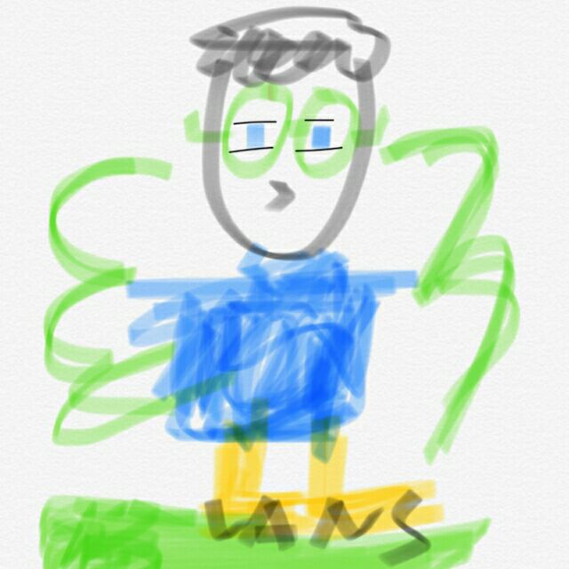

自幼废宅，好打游戏 专业计科，专写BUG
自幼废宅，好打游戏 专业计科，专写BUG
随着科技的发展，现在的游戏已经不是当年超级玛丽、魂斗罗那么简单了，它已经成为了一种新的“艺术品”。
它综合了小说、美术、电影等艺术形式，与此同时它又比这些艺术形式有更好的交互性，它赋予玩家的参与感要远远超出以往任何一门艺术，因为它使玩者跳出了第三方旁观者的身份限制，从而能够真正融入作品中。
我这次制作这种题材的网站，一是想推广一下这些优秀的作品，二是想让更多的人能正确的认识游戏。它不是简单的打打杀杀，打打杀杀的背后可能揭示了反对战争、反对争斗的思考，近些年来杨永信等电疗网瘾的事件层出不穷，我们需要以一个正确的方式来解决青少年网瘾问题。
几千年前，人类就发明了围棋、象棋等娱乐“游戏”，当年却被奉为文人雅士的风趣运动，甚至到当代也是开发智力、体育竞技。我玩过一段时间的象棋，惊奇的发现象棋的左中右三路竟然和现在流行的MOBA（类似王者荣耀、英雄联盟）游戏的上中下三路不谋而合。而现在一些游戏也放到了体育竞赛的项目中，难以想象今后游戏的发展，会不会真的如电影《头号玩家》当中的那样？
它综合了小说、美术、电影等艺术形式，与此同时它又比这些艺术形式有更好的交互性，它赋予玩家的参与感要远远超出以往任何一门艺术，因为它使玩者跳出了第三方旁观者的身份限制，从而能够真正融入作品中。
我这次制作这种题材的网站，一是想推广一下这些优秀的作品，二是想让更多的人能正确的认识游戏。它不是简单的打打杀杀，打打杀杀的背后可能揭示了反对战争、反对争斗的思考，近些年来杨永信等电疗网瘾的事件层出不穷，我们需要以一个正确的方式来解决青少年网瘾问题。
几千年前，人类就发明了围棋、象棋等娱乐“游戏”，当年却被奉为文人雅士的风趣运动，甚至到当代也是开发智力、体育竞技。我玩过一段时间的象棋，惊奇的发现象棋的左中右三路竟然和现在流行的MOBA（类似王者荣耀、英雄联盟）游戏的上中下三路不谋而合。而现在一些游戏也放到了体育竞赛的项目中，难以想象今后游戏的发展，会不会真的如电影《头号玩家》当中的那样？